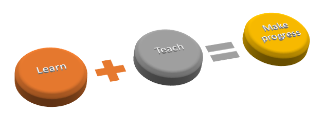

The "Sci.calls" project is a totally new venture in education field. It's a new education center where the process of teaching & learning is conducted in completely different manner compared to what we are used to. The main goal of the project is to enhance the education system all around the world and play, at least, a minor role in the prosperity of mankind.
From 1st to 4th grades as in any other secondary school, students attend the traditional classes where they are being consulted by an experienced mentor (teacher), given homework and learning new material. However, once the students reach the 5th grade they become a part of a program called Sci.calls' Logic. This very program works based on learn2 – learn in two discrepant meanings or, simply, “Learn through teaching” method.
